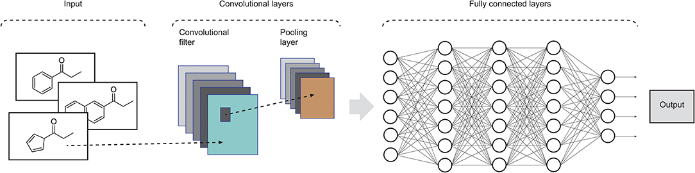

The AI pioneers of the 1950s discussed building machines that could sense, reason and think like people — a concept known as ‘general AI’ that is likely to remain in the realms of science fiction for some time. However, the continued rapid growth in computer-processing power over the past two decades, the availability of large data sets and the development of advanced algorithms have driven major improvements in machine learning. This has helped to bring about ‘narrow AI’, which focuses on specific tasks. These include improved abilities to analyse, understand and generate text and speech through an AI technique called natural-language processing, and artificial neural networks designed to mimic the way our brains make sense of the world. Such techniques are already in widespread use in fields such as computer vision, voice analysis and route selection. This progress has also triggered a wave of start-ups that employ AI for drug discovery, with many of them using it to identify patterns hidden in large volumes of data. For example, researchers at biotechnology company Berg, near Boston, Massachusetts, have developed a model to identify previously unknown cancer mechanisms using tests on more than 1,000 cancerous and healthy human cell samples. They modelled diseased human cells by varying the levels of sugar and oxygen the cells were exposed to, and then tracked their lipid, metabolite, enzyme and protein profiles. The group uses its AI platform to generate and analyse immense amounts of biological and outcomes data from patients to highlight key differences between diseased and healthy cells. The aim of Berg’s approach is to identify potential treatments on the basis of the precise biological causes of disease. “We are turning the drug-discovery paradigm upside down by using patient-driven biology and data to derive more-predictive hypotheses, rather than the traditional trial-and-error approach,” says Niven Narain, Berg’s co-founder and chief executive.
The convolutional neural network, or CNN for short, is a specialized type of neural network model designed for working with two-dimensional image data, although they can be used with one-dimensional and three-dimensional data. Central to the convolutional neural network is the convolutional layer that gives the network its name. This layer performs an operation called a “convolution“. In the context of a convolutional neural network, a convolution is a linear operation that involves the multiplication of a set of weights with the input, much like a traditional neural network. Given that the technique was designed for two-dimensional input, the multiplication is performed between an array of input data and a two-dimensional array of weights, called a filter or a kernel.
 Due to the fast development of computing power and the generation of enormous amount of chemical and biological data, projects involving drug discovery have been benefited from artificial intelligence. Particularly, in the last decades, we have observed a significant increase in the number of studies using deep learning. Some applications of DL involve studies of quantitative structure-activity relationships (QSAR), virtual screening, drug repositioning and in silico prediction of pharmacokinectic properties (absorption, distribution, metabolism, and excretion–ADME) and toxicity. It is important to highlight that traditional techniques have been outperformed by DL in some applications related to drug design due some intrinsic characteristics of biological and chemical data, such as complexity, uncertainty, diversity, and high dimensionality. The main advantages of DL refer to the scale and the complexity of the neural networks used to build robust and predictive models, as well the flexibility in their architecture, allowing for adaptations to specific problems. Some drawbacks of applying DL include the limited number of data in some areas of study and the difficult interpretation of the chemical and biological mechanisms involved in the DL models. In summary, from the many applications of DL in drug design we can conclude that many advances have been observed in this area and new applications and methodologies have been developed every day, making this technique a reliable tool in the arsenal available for the discovery of new drug candidates.